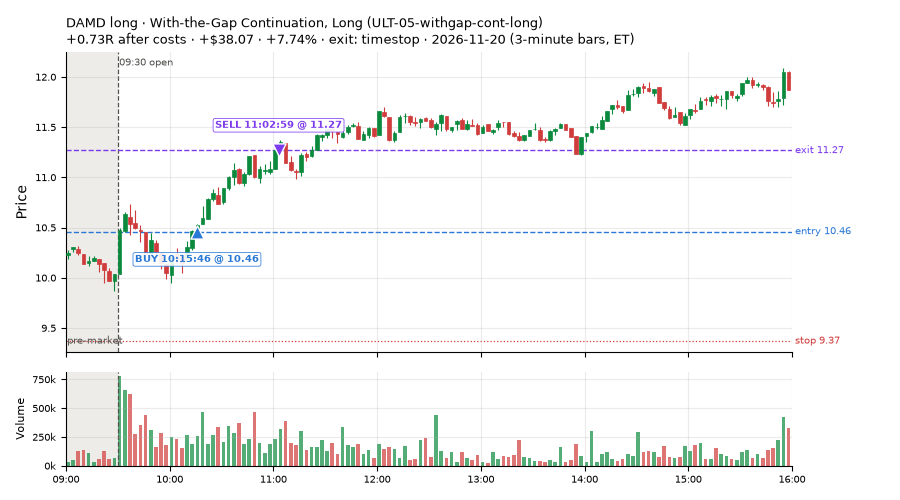
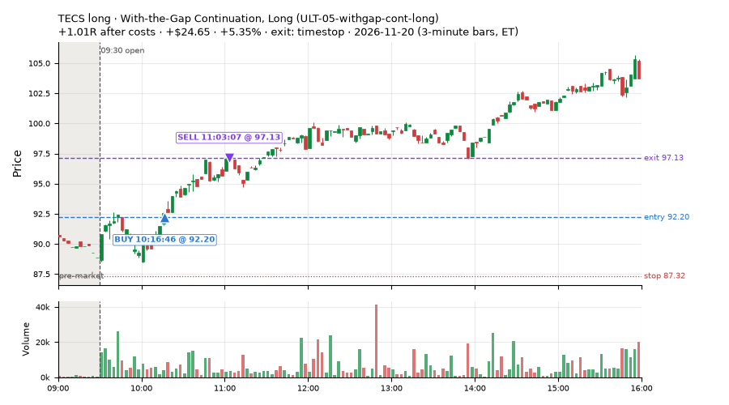
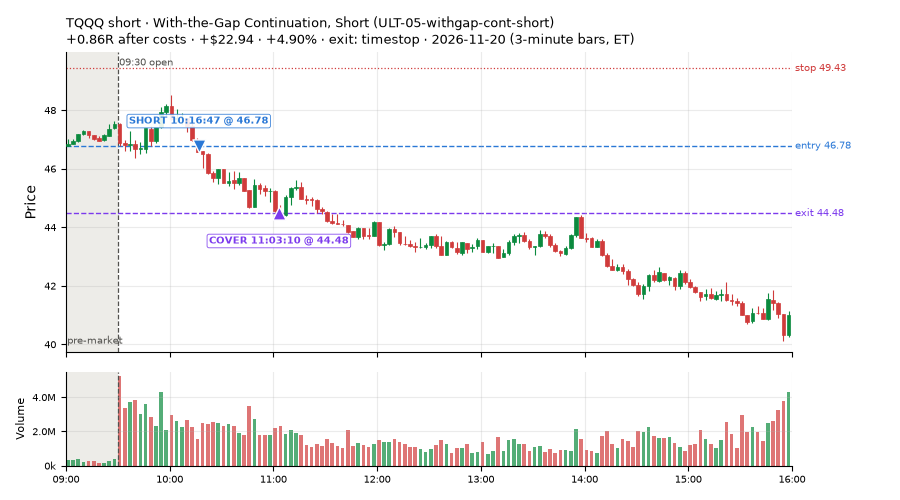
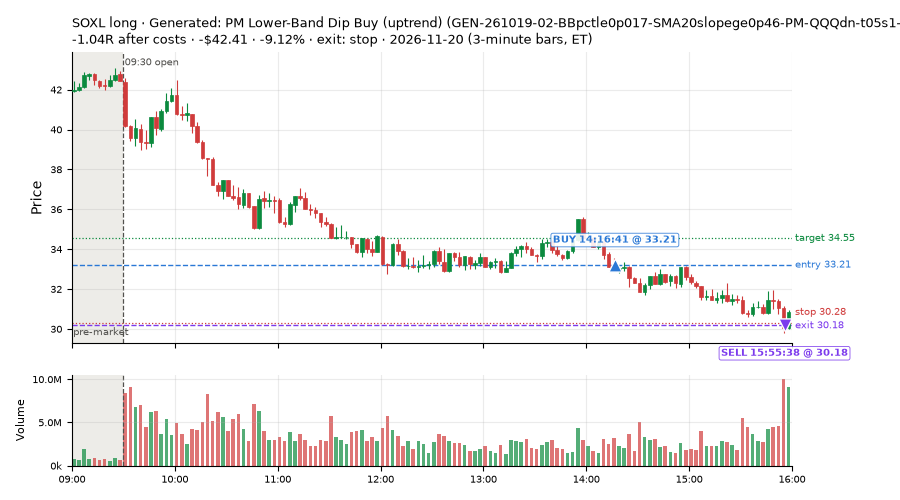
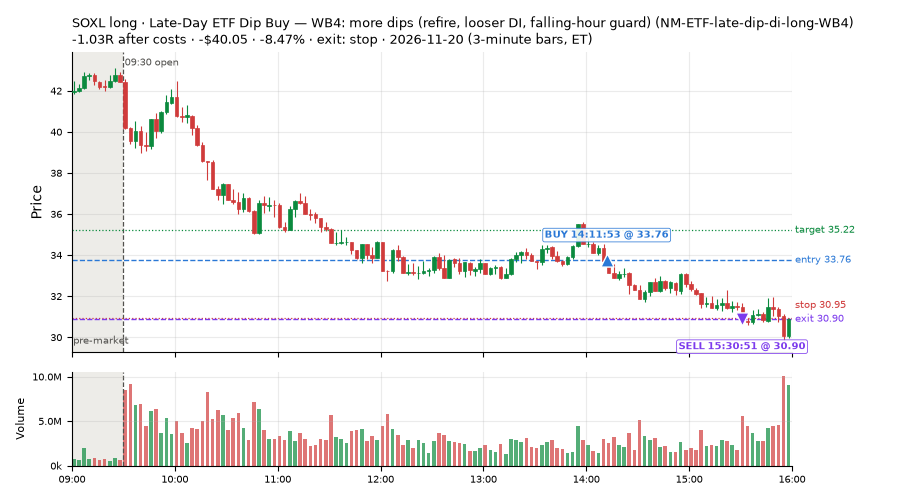
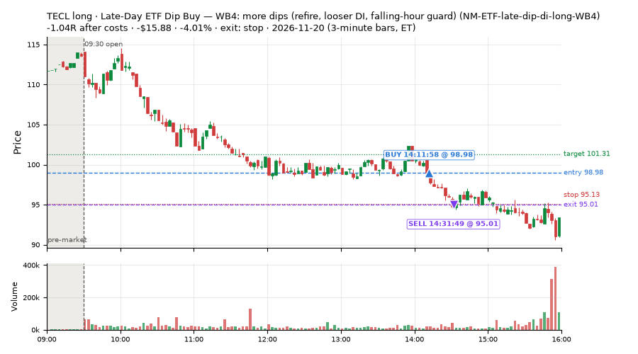
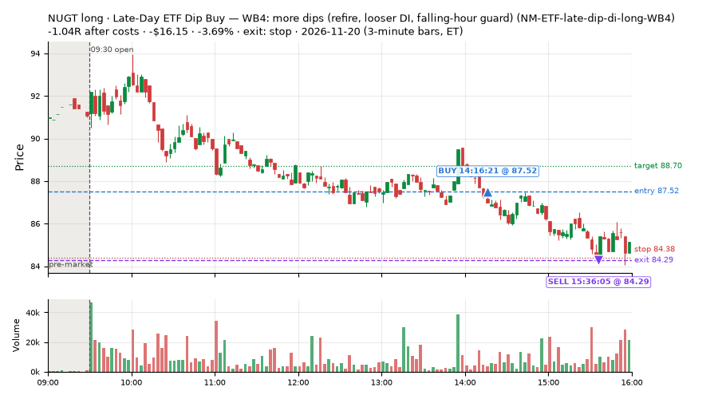
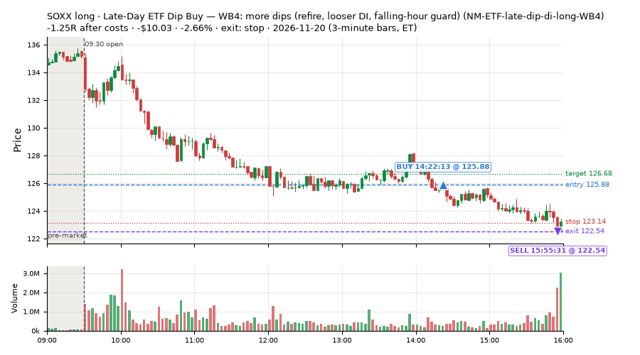

81 trades · win rate 70% · P/L $299.07
PROBATION: no live setup has passed both locked test periods. 10 owner-directed setups added 2026-10-08 (MarcoFlow top 5 + 5 new), untested live. RW6G1 (RW6 + VWAP band guard) added 2026-10-09, probation.

| Symbol | Setup | Side | In | Out | Entry | Exit | Exit reason | % gained | P/L |
|---|---|---|---|---|---|---|---|---|---|
| DAMD | With-the-Gap Continuation, Long (ULT-05-withgap-cont-long) | long | 10:15 | 11:02 | 10.46 | 11.27 | timestop | +7.74% | $38.07 |
| TECS | With-the-Gap Continuation, Long (ULT-05-withgap-cont-long) | long | 10:16 | 11:03 | 92.20 | 97.13 | timestop | +5.35% | $24.65 |
| TQQQ | With-the-Gap Continuation, Short (ULT-05-withgap-cont-short) | short | 10:16 | 11:03 | 46.78 | 44.48 | timestop | +4.90% | $22.94 |
| Symbol | Setup | Side | In | Out | Entry | Exit | Exit reason | % lost | P/L |
|---|---|---|---|---|---|---|---|---|---|
| SOXL | GEN-261019-02-BBpctle0p017-SMA20slopege0p46-PM-QQQdn-t05s1-long | long | 14:16 | 15:55 | 33.21 | 30.18 | stop | -9.12% | $-42.41 |
| SOXL | NM-ETF-late-dip-di-long-WB4 | long | 14:11 | 15:30 | 33.76 | 30.90 | stop | -8.47% | $-40.05 |
| TECL | NM-ETF-late-dip-di-long-WB4 | long | 14:11 | 14:31 | 98.98 | 95.01 | stop | -4.01% | $-15.88 |
| NUGT | NM-ETF-late-dip-di-long-WB4 | long | 14:16 | 15:36 | 87.52 | 84.29 | stop | -3.69% | $-16.15 |
| SOXX | NM-ETF-late-dip-di-long-WB4 | long | 14:22 | 15:55 | 125.88 | 122.54 | stop | -2.66% | $-10.03 |








Signal to fill: median 1s, 90th percentile 3s (81 trades). Bars close each minute; the order follows the bar close.
Best excursion (MFE): median 0.52R; worst (MAE) median 0.40R. 43% of trades never got +0.25R in our favour; 0 reached +1R and still closed at or below 0.
| Symbol | Setup | Best R | Worst R | Closed R |
|---|---|---|---|---|
| XME | NM-ETF-late-dip-di-long-WB4 | +0.52 | -1.34 | -1.35 |
| HSY | GEN-261026-05-Ret15mATRge0p042-FromPCATRge0p28-ORHdistlem0p38-OPEN-BRopgt0p5-hold-short | +0.19 | -1.03 | -1.17 |
| ED | GEN-261026-05-Ret15mATRge0p042-FromPCATRge0p28-ORHdistlem0p38-OPEN-BRopgt0p5-hold-short | +0.03 | -1.05 | -1.27 |
| SOXX | NM-ETF-late-dip-di-long-WB4 | +0.02 | -1.24 | -1.25 |
| GDX | NM-ETF-late-dip-di-long-WB4 | +0.16 | -1.07 | -1.07 |
| Entry time | Trades | Win | Avg R | P/L |
|---|---|---|---|---|
| 09:50-10:30 | 28 | 86% | +0.47 | $357.61 |
| 10:30-11:30 | 12 | 100% | +0.73 | $104.93 |
| 11:30-13:00 | 5 | 100% | +0.81 | $28.21 |
| 13:00-14:00 | 9 | 89% | +0.21 | $28.91 |
| 14:00-16:00 | 27 | 30% | -0.72 | $-220.59 |
| Setup | Trades | Win | Avg R after costs | Adj R (net of SPY) | Avg R ex-market (all sessions) | P/L |
|---|---|---|---|---|---|---|
| Generated: PM Lower-Band Dip Buy (uptrend) (GEN-261019-02-BBpctle0p017-SMA20slopege0p46-PM-QQQdn-t05s1-long) | 6.0 | 67% | -0.16 | -0.01 | +0.30 (beta +0.72, n 6) | $-34.24 |
| Generated: Open Up-Day Bounce Short (GEN-261026-05-Ret15mATRge0p042-FromPCATRge0p28-ORHdistlem0p38-OPEN-BRopgt0p5-hold-short) | 4.0 | 25% | -0.19 | -2.38 | -1.34 (beta -1.02, n 5) | $2.49 |
| Generated: Morning Up-Stock Dip Short (GEN-261027-07-RSI14le35-FromOpenge2-AM-BRvwlt0p5-t1s1-short) | 2.0 | 100% | +1.18 | +0.04 | -0.39 (beta -1.45, n 34) | $13.12 |
| Late-Day ETF Dip Buy — WB4: more dips (refire, looser DI, falling-hour guard) (NM-ETF-late-dip-di-long-WB4) | 22.0 | 23% | -0.81 | -0.42 | -0.09 (beta +0.96, n 28) | $-181.78 |
| NS2 Up-3 Short, QQQ Up, Slope Down (near-miss) (NM-RWR4-ns2-up3-qqqup-slopedn-short) | 2.0 | 100% | +0.21 | +0.06 | – | $6.69 |
| Gap-Down Early Bounce Short (all day) — WB3: SPY-after-09:50 gates + gap < -0.5% + end 13:00 (RW7-gapdn-bounce-early-short-FD-WB3) | 16.0 | 100% | +0.73 | +0.05 | -0.10 (beta -0.50, n 101) | $100.04 |
| With-the-Gap Continuation, Long (ULT-05-withgap-cont-long) | 5.0 | 80% | +0.58 | +0.83 | -4.48 (beta -4.22, n 5) | $85.11 |
| With-the-Gap Continuation, Short (ULT-05-withgap-cont-short) | 24.0 | 96% | +0.46 | +0.24 | -0.03 (beta -0.48, n 24) | $307.64 |
Market direction (SPY, beta 1) accounted for $134.78 of today's $299.07; the rest ($164.29) came from the setups themselves. Avg R net of SPY: -0.10 (incl. a hedge leg's cost; report only).
21 setups live today. Today: 140 signals, 81 taken, 0 lost because another setup held the symbol (0%). Since 2026-11-12 (7 sessions): 782 signals, 377 taken, 3 lost to other setups (0%). Peak open positions today 33 of 400 slots. Earnings blackout removed 181 symbols before scanning.
Simulated playing time (not live): 405 what-if trades of signals not taken, avg +0.04R, 53% winners; of them 3 lost to another setup (avg +0.33R).
Silent: NM-RWN5-ns3-mon-weakrs-short-WB3, CWT04-backside-lh-a25-short, IDX5-spy050-0945-3x-trail, LIQ-pdl-sweep-open15-vwap-long
| Prio | Setup | Today sig / taken | Sessions | Signals / taken / trades | Taken/day | Expected/day | Lost to other setups | Lost to (setup n) | Top skip reasons | SIMULATED: not-taken n / avg R / win | Verdict |
|---|---|---|---|---|---|---|---|---|---|---|---|
| 1 | Late-Day ETF Dip Buy — WB4: more dips (refire, looser DI, falling-hour guard) NM-ETF-late-dip-di-long-WB4 | 24 / 22 | 4 | 33 / 28 / 28 | 7.00 | – | 1 | NS3-failed-vwap-reclaim-short 1 | other 3, symbol held by another setup 1, spread / quote / size 1 | 5 / +0.14R / 80% | ok 35.0 entries/week |
| 2 | Gap-Down Early Bounce Short (all day) — WB3: SPY-after-09:50 gates + gap < -0.5% + end 13:00 RW7-gapdn-bounce-early-short-FD-WB3 | 24 / 16 | 4 | 138 / 101 / 101 | 25.25 | – | 1 | GEN-261028-09-FlowShiftlem0p65-ADX7le23-AM-BRoplt0p35-t05s1-long 1 | spread / quote / size 32, not shortable / shorts off 4, symbol held by another setup 1 | 37 / -0.06R / 49% | ok 126.2 entries/week |
| 3 | Monday Weak-RS NS3 Short (near-miss) — WB3: reclaim volume >= 0.45x, from 10:05 NM-RWN5-ns3-mon-weakrs-short-WB3 | 0 / 0 | 4 | 0 / 0 / 0 | 0.00 | – | 0 | – | – | 0 / – | silent no signals in 4 session(s); no expected rate on file |
| 4 | Generated: Lunch New-Low Short (selling) — WB1: down >= 1.3 ATR on the day GEN-261026-03-NewLOD-Flow3lem0p37-FromOpenATRlem0p78-LUNCH-BRopgt0p5-holdtr-short-WB1 | 0 / 0 | 4 | 2 / 2 / 2 | 0.50 | – | 0 | – | – | 0 / – | slow 2.5 entries/week; ~24 weeks to 60 trades |
| 5 | Generated: Late Down-Stock Turn Buy (SPY up) GEN-261028-01-MACDhge0p12-Since950ATRlem0p25-LATE-SPYgt0p5-holdtr-long | 0 / 0 | 1 | 0 / 0 / 0 | 0.00 | – | 0 | – | – | 0 / – | quiet - wait no signals in 1 session(s); too early to tell |
| 6 | Generated: PM VWAP Reclaim Buy (SPY up) GEN-261019-06-VWAPxUp-EMAdiffge0p29-PM-SPYgt0p5-holdtr-long | 0 / 0 | 1 | 0 / 0 / 0 | 0.00 | – | 0 | – | – | 0 / – | quiet - wait no signals in 1 session(s); too early to tell |
| 7 | NS2 Up-3 Short, QQQ Up, Slope Down (near-miss) NM-RWR4-ns2-up3-qqqup-slopedn-short | 2 / 2 | 1 | 2 / 2 / 2 | 2.00 | – | 0 | – | – | 0 / – | slow 10.0 entries/week; ~6 weeks to 60 trades |
| 8 | Backside VWAP-Test Short CWT04-backside-vwaptest-a15-short | 0 / 0 | 1 | 0 / 0 / 0 | 0.00 | – | 0 | – | – | 0 / – | quiet - wait no signals in 1 session(s); too early to tell |
| 9 | Generated: Late Gap-Down Oversold Buy GEN-261028-04-ORBfailUp-RSI14le22-Gaplem1p2-LATE-BRvwgt0p5-holdtr-long | 0 / 0 | 1 | 0 / 0 / 0 | 0.00 | – | 0 | – | – | 0 / – | quiet - wait no signals in 1 session(s); too early to tell |
| 10 | Big Gainer Fade with VWAP Band Guard RW6G1-ns2-up3-vwap2sd-short | 2 / 0 | 7 | 13 / 5 / 5 | 0.71 | 0.40 | 0 | – | not shortable / shorts off 5, spread / quote / size 2, other 1 | 8 / +0.80R / 88% | slow 3.6 entries/week; ~17 weeks to 60 trades |
| 11 | Backside Lower-High Short (big runner) CWT04-backside-lh-a25-short | 0 / 0 | 7 | 0 / 0 / 0 | 0.00 | – | 0 | – | – | 0 / – | silent no signals in 7 session(s); no expected rate on file |
| 12 | Index Dip Bounce 5 3x S&P IDX5-spy050-0945-3x-trail | 0 / 0 | 7 | 0 / 0 / 0 | 0.00 | – | 0 | – | – | 0 / – | silent no signals in 7 session(s); no expected rate on file |
| 13 | * SPY Dip of 0.30%, Breadth Turn (SPXL, trailing) (near-miss) LD8-spy-dip030-breadthturn-spxl-holdtr-long | 0 / 0 | 7 | 1 / 1 / 1 | 0.14 | – | 0 | – | – | 0 / – | slow 0.7 entries/week; ~84 weeks to 60 trades |
| 14 | Generated: PM Lower-Band Dip Buy (uptrend) GEN-261019-02-BBpctle0p017-SMA20slopege0p46-PM-QQQdn-t05s1-long | 7 / 6 | 1 | 7 / 6 / 6 | 6.00 | – | 0 | – | spread / quote / size 1 | 1 / +0.37R / 100% | ok 30.0 entries/week |
| 15 | Generated: Late Pullback Buy (MACD rising) GEN-261027-01-MACDhge0p12-Ret15mATRlem0p069-LATE-BRvwgt0p5-t05s1-long | 0 / 0 | 7 | 12 / 3 / 3 | 0.43 | – | 0 | – | spread / quote / size 7, other 2 | 9 / -0.25R / 33% | slow 2.1 entries/week; ~28 weeks to 60 trades |
| 16 | Generated: Open Up-Day Bounce Short GEN-261026-05-Ret15mATRge0p042-FromPCATRge0p28-ORHdistlem0p38-OPEN-BRopgt0p5-hold-short | 10 / 4 | 5 | 13 / 5 / 5 | 1.00 | – | 0 | – | spread / quote / size 5, other 2, not shortable / shorts off 1 | 8 / +1.63R / 75% | slow 5.0 entries/week; ~12 weeks to 60 trades |
| 17 | Generated: Morning Weak-Bounce Short (quiet) GEN-261022-08-EMAdChglem0p094-Flow3ge1-RVolDayle0p59-AM-SPYgt0p25-holdtr-short | 1 / 0 | 5 | 1 / 0 / 0 | 0.00 | – | 0 | – | spread / quote / size 1 | 1 / +2.11R / 100% | slow no entries yet |
| 18 | Generated: Morning Up-Stock Dip Short GEN-261027-07-RSI14le35-FromOpenge2-AM-BRvwlt0p5-t1s1-short | 9 / 2 | 7 | 138 / 34 / 34 | 4.86 | – | 0 | – | not shortable / shorts off 53, spread / quote / size 38, other 13 | 104 / -0.23R / 40% | ok 24.3 entries/week |
| 19 | Big Loser VWAP Reclaim Fade NS3-failed-vwap-reclaim-short | 1 / 0 | 7 | 48 / 20 / 20 | 2.86 | 3.03 | 0 | – | spread / quote / size 19, not shortable / shorts off 6, other 3 | 28 / +0.48R / 75% | slow 14.3 entries/week; ~4 weeks to 60 trades |
| 20 | With-the-Gap Continuation, Long ULT-05-withgap-cont-long | 8 / 5 | 1 | 8 / 5 / 5 | 5.00 | – | 0 | – | spread / quote / size 3 | 3 / +1.65R / 100% | ok 25.0 entries/week |
| 21 | With-the-Gap Continuation, Short ULT-05-withgap-cont-short | 52 / 24 | 1 | 52 / 24 / 24 | 24.00 | – | 0 | – | spread / quote / size 23, not shortable / shorts off 5 | 28 / +0.68R / 96% | ok 120.0 entries/week |
Every trade is attached as a CSV you can open and edit in Excel or Google Sheets. Live page: https://misiti15.github.io/MCF/live/